/* clarence-h-white - proofs */
12 plates. Deterministic overlays rendered by the composition-analysis skill.
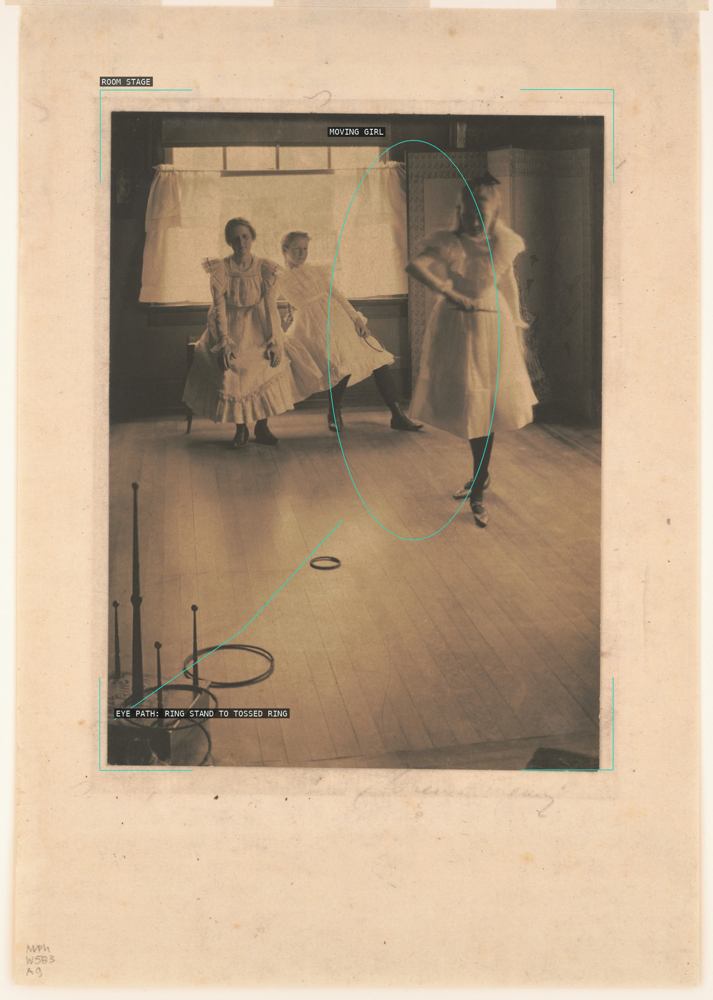
01-ring-toss
The framed room and long floor make the tossed ring and moving girl read as a staged action.
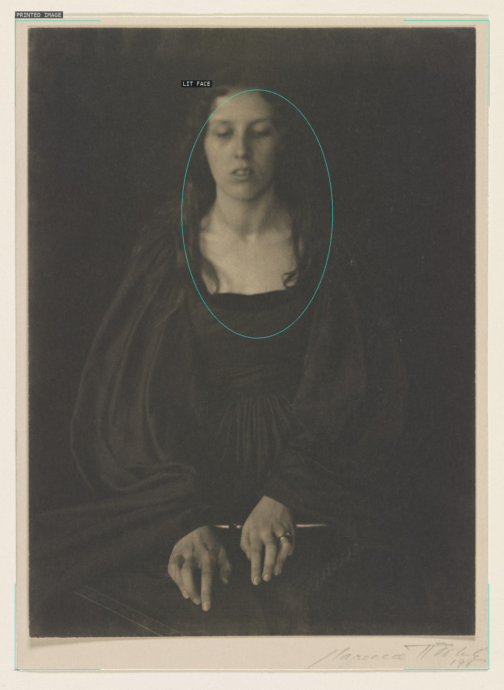
02-girl-with-harp
A lit face and poised hands at a zither emerge from a nearly black field.
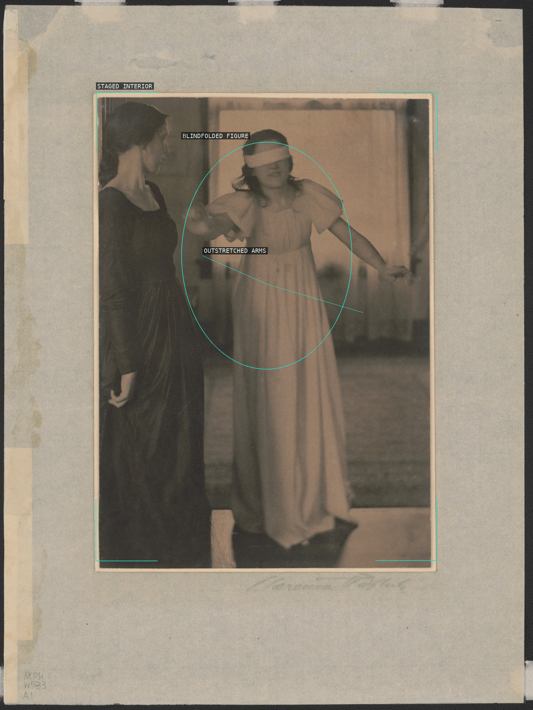
03-blind-mans-bluff
The blindfolded figure and the arc of her arms make the staged interior a compact theatrical scene.
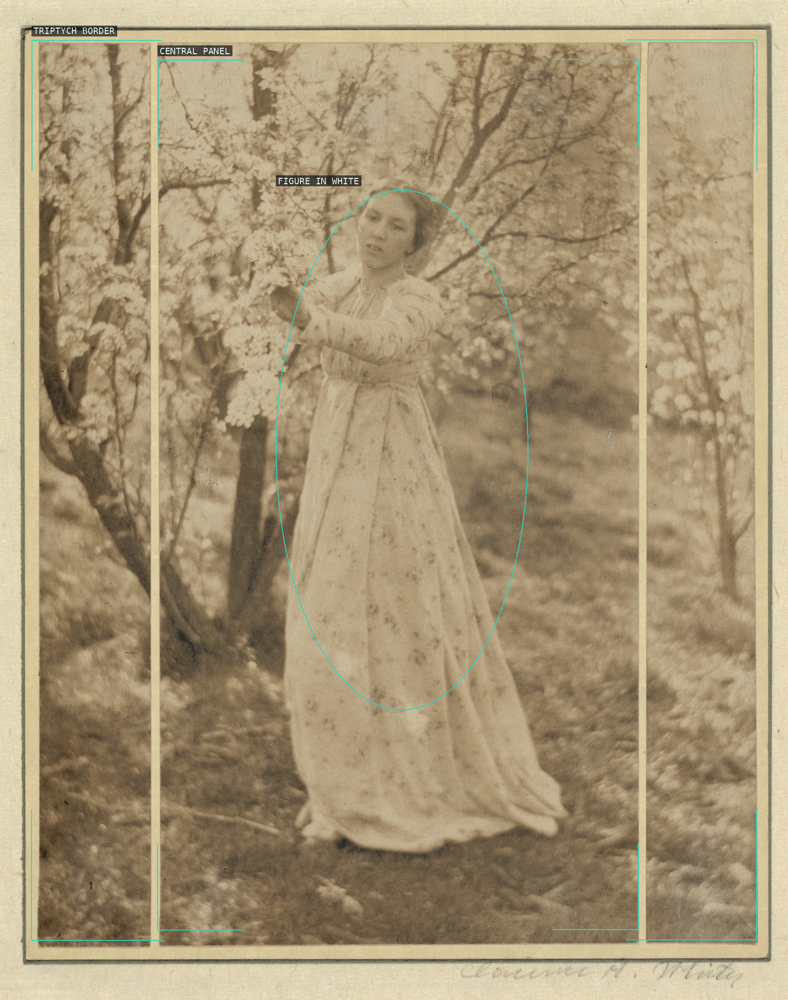
04-spring-triptych
Repeated panels turn a figure among blossoms into a decorative vertical rhythm.
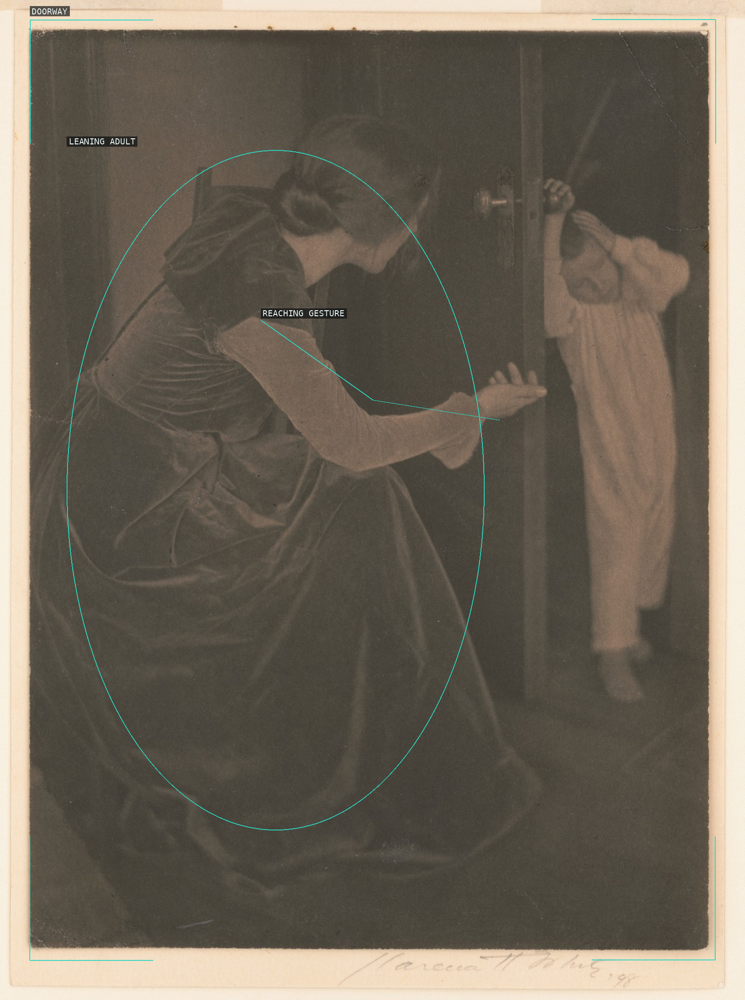
05-bashful-child
A dark adult's long reaching gesture opens the doorway toward the small pale child.
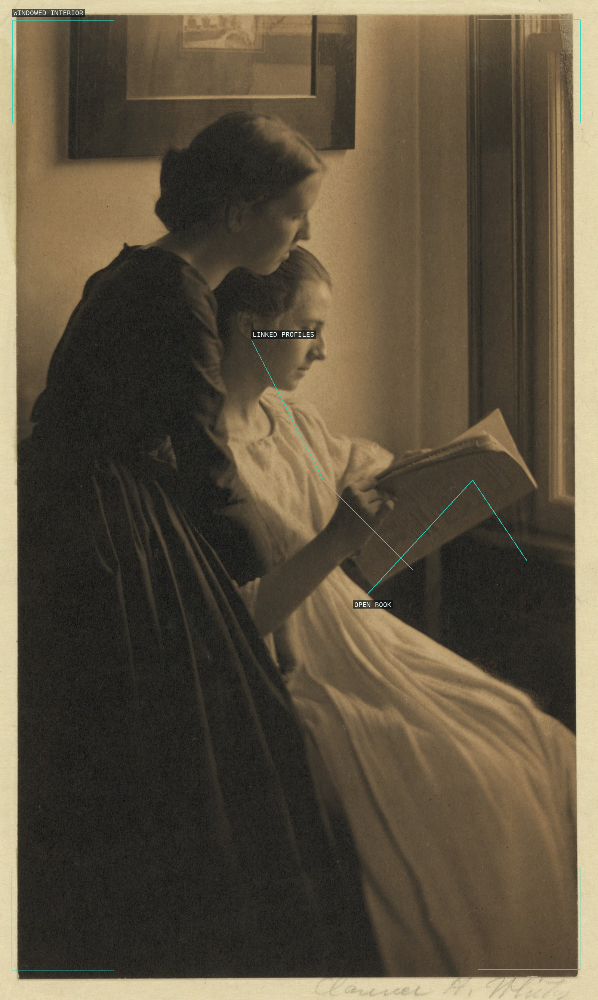
06-the-readers
Two profiles and an open book are held between the dark room and the bright window.
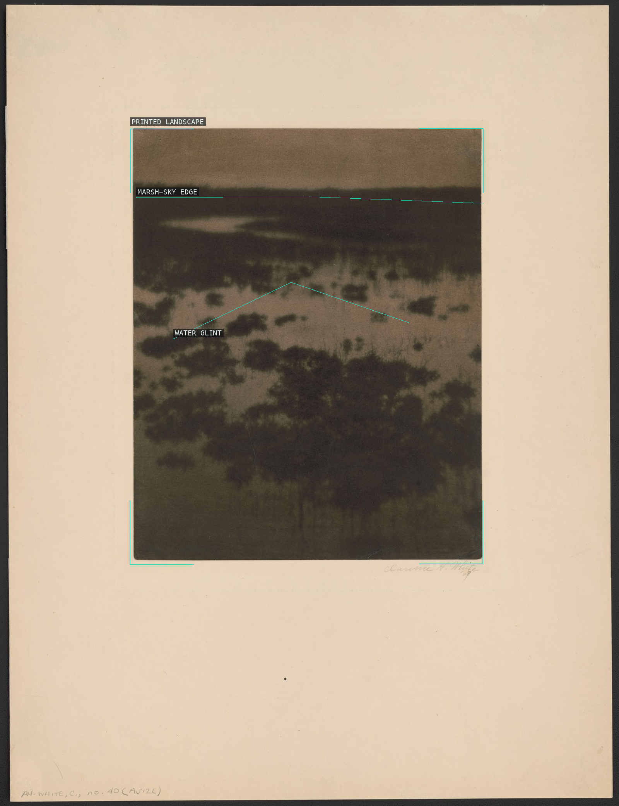
07-maine-marshes
The far marsh band and small water glint reduce the landscape to dark and pale horizontal fields.
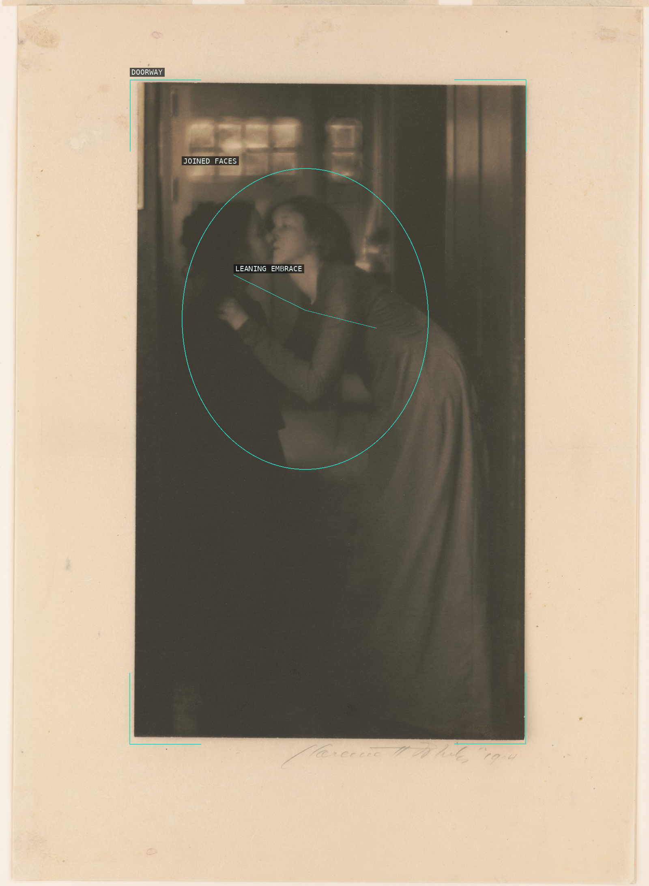
08-the-kiss
A doorway encloses two softly joined figures, turning a kiss into a single pale gesture in shadow.
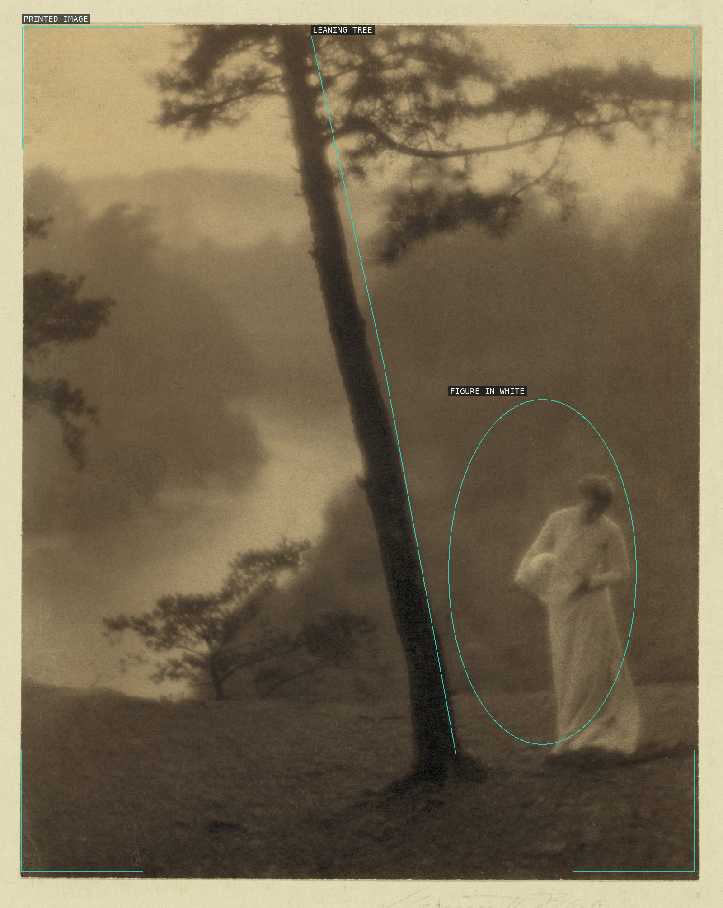
09-morning-bathroom
A leaning trunk divides a hazy landscape from a pale figure at the right edge.
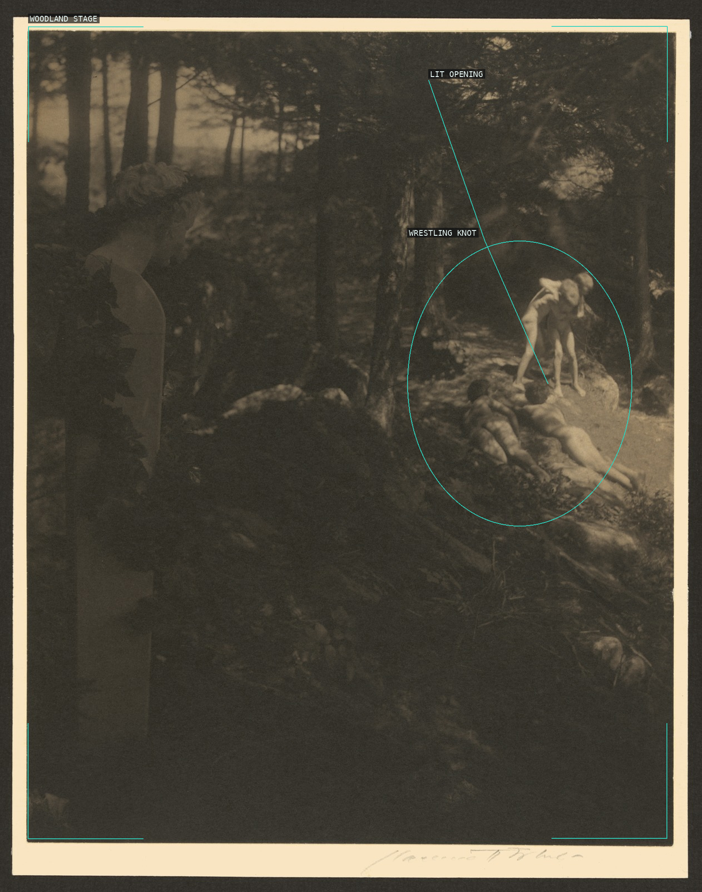
10-the-wrestlers
A small knot of wrestlers is isolated by a lit opening inside a dark woodland stage.
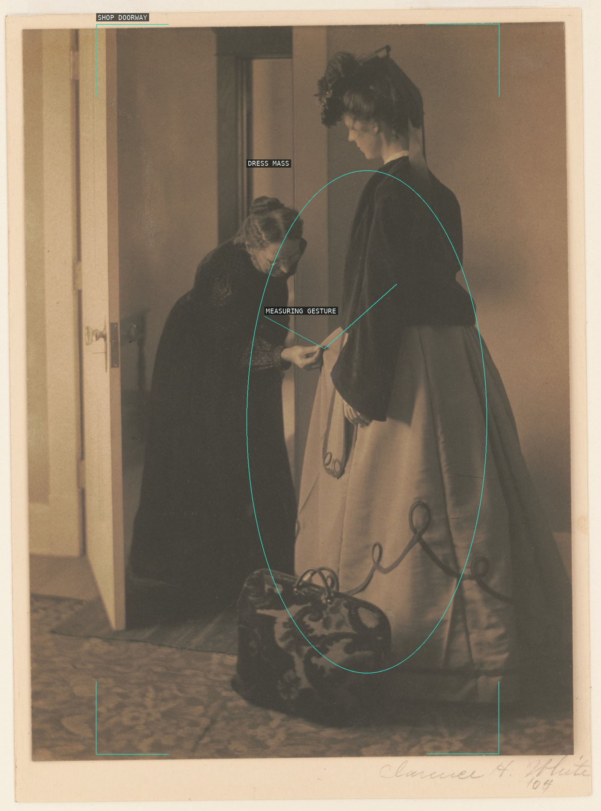
11-how-much-was-that-a-yard
The doorway, measuring gesture, and large dress mass make a domestic transaction into a tableau.
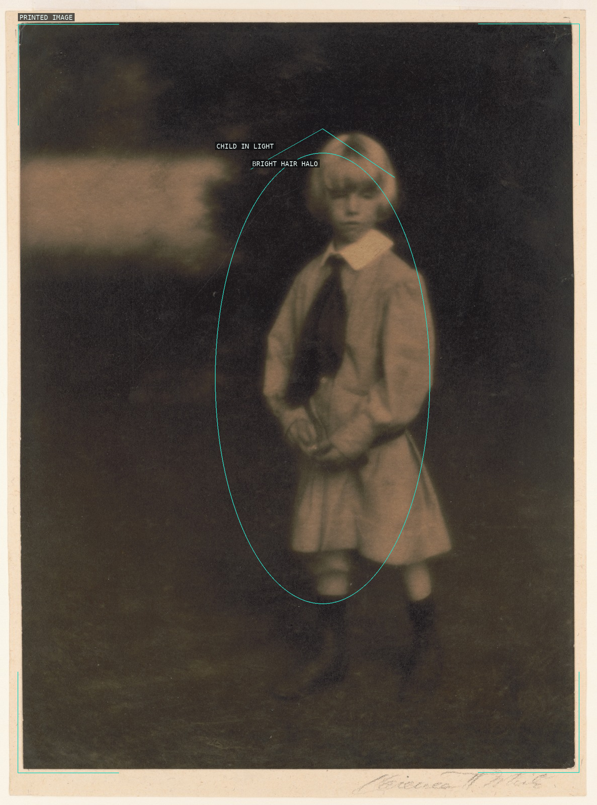
12-little-lord-fauntleroy
A pale child stands alone against a deep garden field, with bright hair and collar carrying the light.